Help & setup
From install to your first traceable feature.
Five minutes, one model connection. Every recipe uses the extension's real presets — base URLs, env vars, and default models straight from the source.
01Install
One extension — no account, no companion app.
Grab it from the VS Code Marketplace (VS Code & Insiders) or Open VSX (VSCodium, Windsurf, Gitpod). After install, the AFX icon appears in the activity bar and AFX: Open Workbench opens the bottom panel. Works in VS Code, VS Code Insiders, VSCodium & Antigravity (pre-2.0).
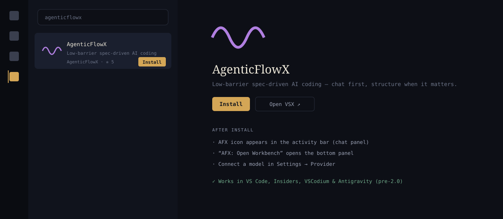
Search "agenticflowx" in the Extensions panel and hit Install. illustration
02Connect a model
No vendor billing — you bring the access you already have. All three paths live in Settings → Provider; keys are stored in VS Code SecretStorage, or read from an env var or shell command.
Use your existing plan
Anthropic, GitHub Copilot, ChatGPT (Codex) — proper OAuth, no key handling.
30+ catalog providers
OpenAI, Gemini, DeepSeek, Xiaomi, Groq, Mistral, OpenRouter, Bedrock, Azure, xAI…
Your own hardware
Ollama, LM Studio, vLLM presets — or any OpenAI-compatible endpoint.
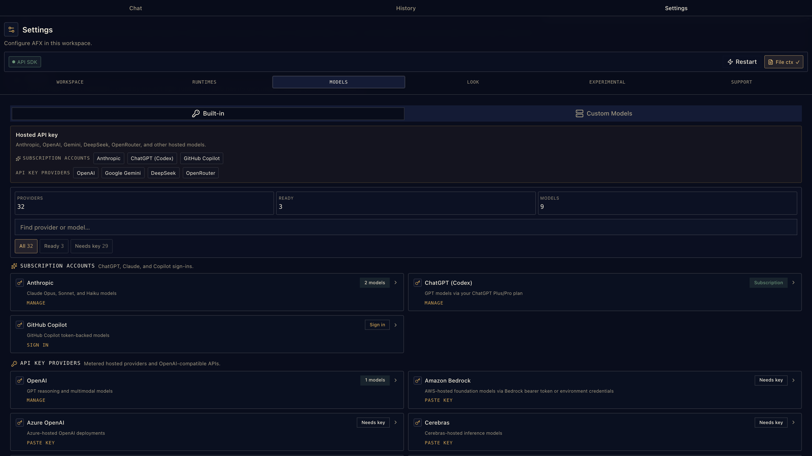
Settings → Provider — subscriptions, keys, and runtimes on one surface. Configure several; switch mid-conversation.
03Model recipes
Frontier plans, value APIs, or fully local — concrete steps for each.
Anthropic · Copilot · ChatGPT
subscription · OAuthSign in with the plan you already pay for — a browser OAuth flow, no key to paste.
- Settings → Provider → pick Anthropic, GitHub Copilot, or ChatGPT (Codex) and hit Sign in.
- Approve in the browser — Anthropic and Codex use a loopback flow, Copilot shows a device code.
- Done. Models appear in the picker immediately.

Subscription sign-ins — connected accounts show their models right in the same list.
OpenAI · Gemini · xAI · Mistral
API keyPick the provider, paste the key — SecretStorage keeps it local. Matching env vars work too.
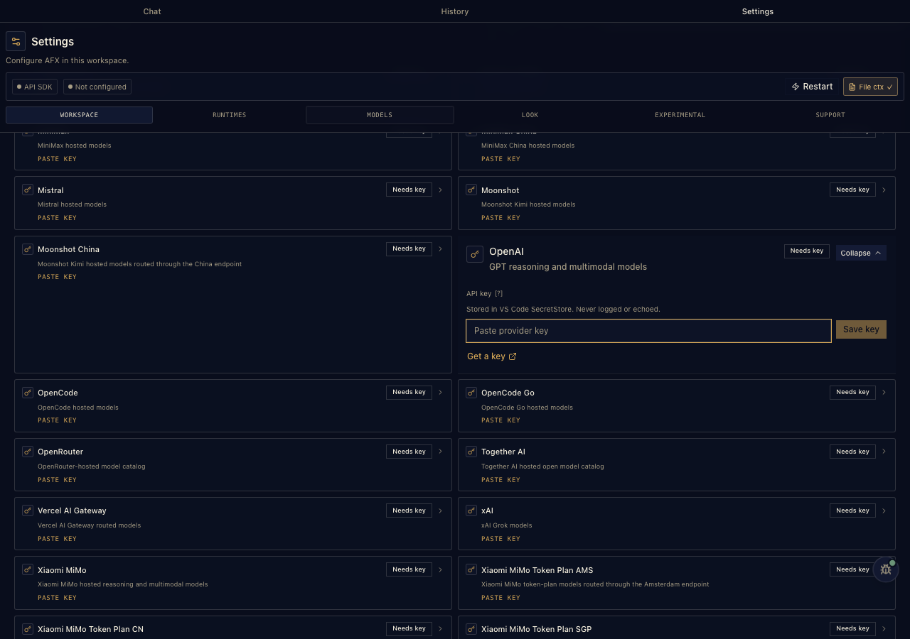
Key entry — stored in VS Code SecretStorage, masked from telemetry, never written to disk in plain text.
DeepSeek
API key · value pickStrong coding performance at a fraction of frontier pricing — a favorite for mechanical edits and long sessions.
- Get a key at platform.deepseek.com.
- Settings → Provider → DeepSeek, paste it (or set
DEEPSEEK_API_KEY).
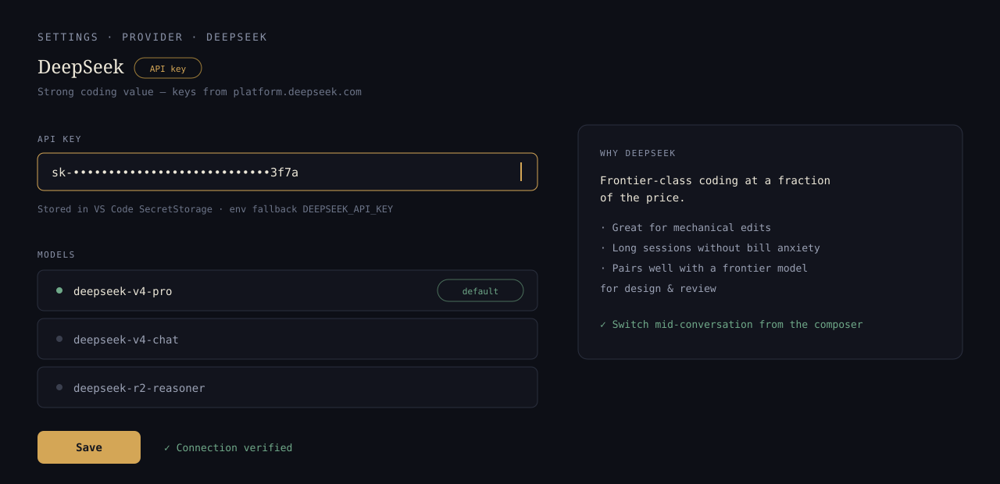
DeepSeek in provider settings — key in SecretStorage, models ready in the picker. illustration
Xiaomi MiMo
API key · regional plansFour catalog entries: the standard API plus dedicated Token Plan variants so billing routes to your region.
- Settings → Provider → Xiaomi MiMo and paste your key (
XIAOMI_API_KEY). - On a token plan? Choose the CN, AMS, or SGP variant instead — each has its own key field.
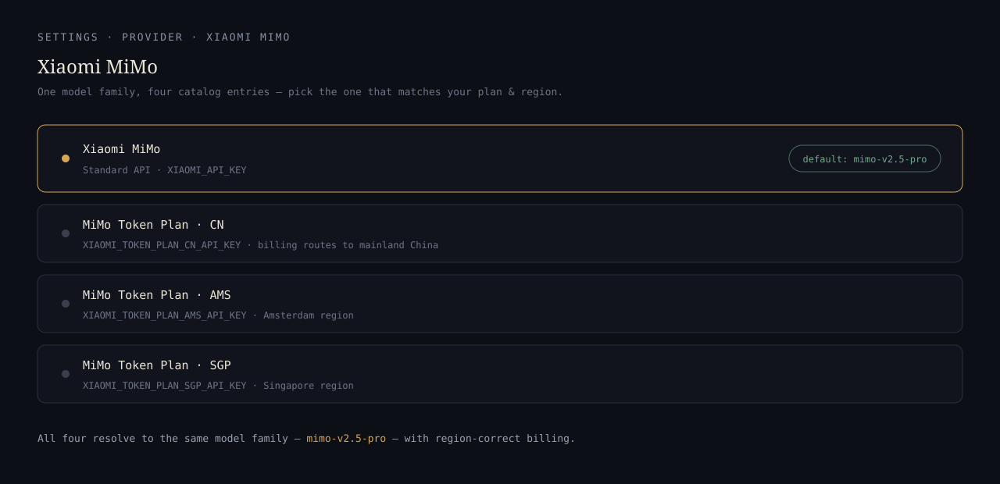
Four MiMo entries — standard API plus region-billed Token Plan variants. illustration
Kimi · MiniMax · Z.ai · Groq
API keyAll in the built-in catalog with their own key fields — Kimi also ships as the "Kimi For Coding" plan provider, MiniMax has global and CN endpoints, Groq serves very fast open-weight inference.
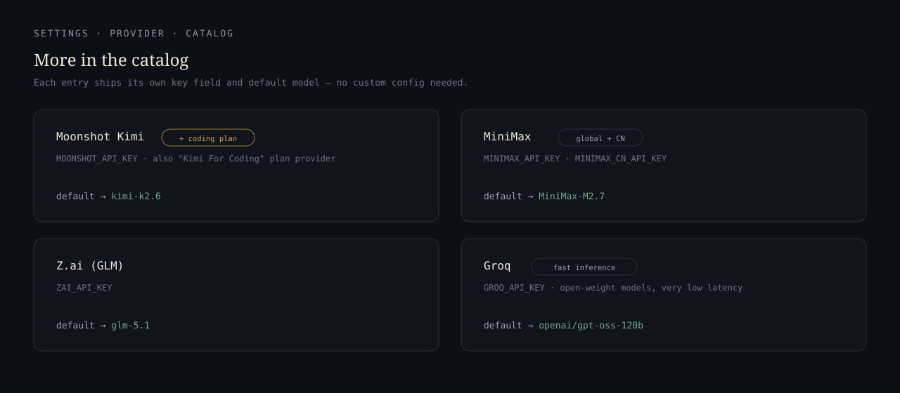
Each catalog entry ships its own key field and default model — no custom config needed. illustration
Routers & enterprise
gatewaysOpenRouter (openrouter.ai/api/v1) — one key, hundreds of models, preset included. Vercel AI Gateway and Cloudflare AI Gateway / Workers AI are presets too. Enterprise: Amazon Bedrock, Azure OpenAI, and Google Vertex live in the catalog with their own auth fields.

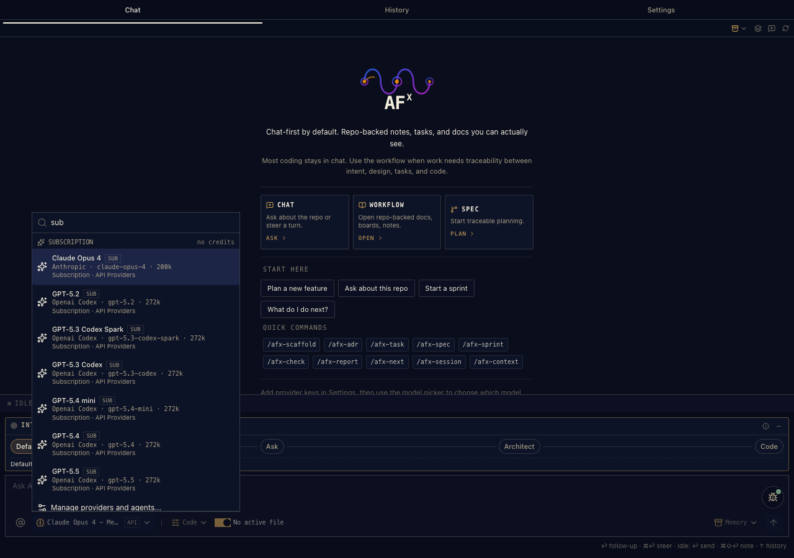
Ollama
local · no key- Pull a model:
ollama pull qwen3-coder— anything in the Ollama library. - Settings → Provider → Add custom → Ollama. Base URL prefilled:
http://localhost:11434/v1, key source none. - Your local models join the same picker as everything else.

Local runtimes — point AFX at Ollama, or connect your installed Pi CLI and reuse its config.
llama.cpp
local · Custom presetllama.cpp's server speaks the OpenAI API — the blank Custom preset points AFX at it in under a minute. LM Studio (localhost:1234/v1) and vLLM (localhost:8000/v1) have dedicated presets with the same no-key flow.
- Start the server:
llama-server -m your-model.gguf— it listens on port 8080. - Settings → Provider → Add custom → Custom. Base URL
http://localhost:8080/v1, API type OpenAI completions, key none.
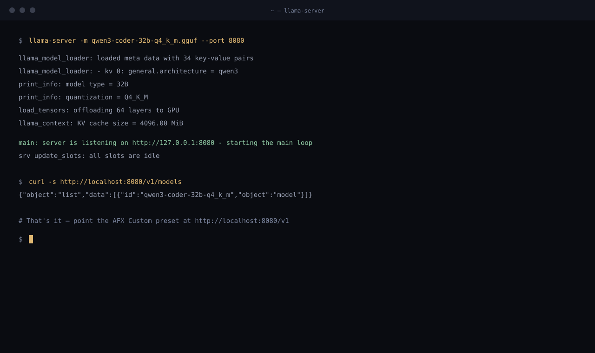
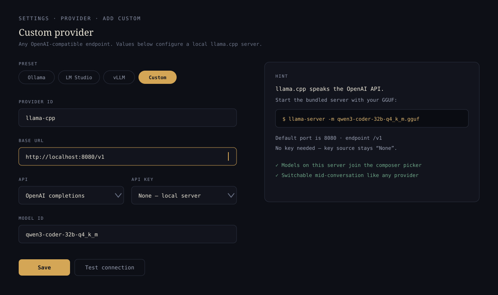
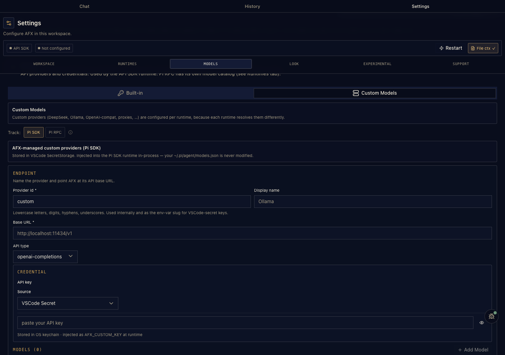
The Add-custom picker — nine presets, or fill in any OpenAI-compatible endpoint.
04Already on Pi? You're done.
If you drive Pi from the terminal today, AFX plugs straight into your installed Pi CLI — nothing changes on Pi's side. Same config, same sign-ins, same sessions.
- Settings → Provider → Runtimes → Detect Pi CLI. AFX finds
pion your PATH. - That's it — the rest is automatic. AFX points
afx.agentBinaryPathat your binary and switches the runtime to Pi RPC (the bundled SDK steps aside). - Pi stays yours. Your
~/.pi/agentconfig (or$PI_CODING_AGENT_DIR), provider auth, and skills are Pi's own — AFX shares Pi's session directory, so terminal and VS Code history live in one place.
afx.pi.projectTrust: ask · trust · ignore), and you can fence off individual Pi tools with afx.pi.excludedTools.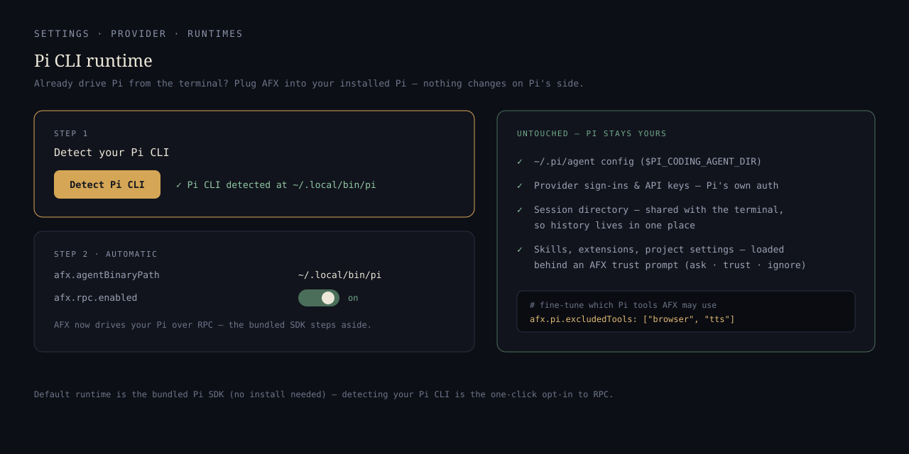
One click: detect, and AFX drives your Pi over RPC — config, auth, and sessions untouched. illustration
The Runtimes surface — Pi CLI connection alongside local runtime presets.
05Using the three modes
A mode answers one question: how much may the agent touch? Switch any time with Ctrl+Shift+M or the status bar — mid-conversation is fine. The composer's intent strip follows the mode (Ctrl+Alt+M cycles intents).
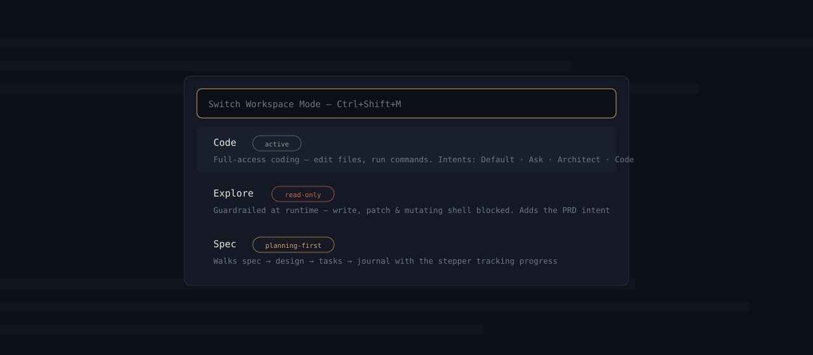
Ctrl+Shift+M — the mode switcher. illustration
Code — the default
Use it for everyday work: ask, edit, run, follow up while context is fresh.
- Intents: Default · Ask · Architect · Code — Default sends exactly what you type; zero injection, zero extra tokens. Ask answers without editing; Architect thinks structure-first; Code implements.
- Full access: file edits, commands, the works — with the persistence checkpoint guarding large multi-file writes.
Explore — read-only, enforced
Use it for unfamiliar repos, reviews, and "what does this actually do?" sessions — when you want answers with a hard guarantee nothing changes.
- Real guardrails: write, patch, and mutating shell/git/npm tools are blocked host-side — not a polite prompt. Read-only git (
status,diff) stays available. - PRD intent: Explore swaps the fourth intent slot for PRD — investigate a repo, come out with product requirements.

Explore mode — investigate without touching a line.
What Explore can — and can't — do
The read-only promise is enforced by the extension itself, not just asked of the model. Mutating tools are blocked at the host before they ever run.
It can
- Read any file, follow references, summarize what it finds
- Search and grep across the whole repo
- Trace
@seelinks and jump to[FR-1]/[DES-…]anchors - Run read-only git —
status,diff - Answer "how does this actually work?" grounded in your code
- Turn what it learns into a PRD (the PRD intent)
It can't
- Edit or create files
- Apply patches or structural edits
- Run mutating shell commands
- Commit, push, or any write-git
- Install packages
- — all blocked host-side, so a stray prompt can't slip through
Reach for Explore when you're landing in an unfamiliar codebase, reviewing a change with zero risk of touching it, planning before you build, or investigating a bug whose cause you don't know yet. When you're ready to act, switch to Code or Spec — Ctrl+Shift+M.
Explore mode — ask anything, change nothing.
Spec — planning-first
Use it when a piece of work needs to survive the session: requirements, design decisions, tasks a teammate (or tomorrow's you) can pick up.
- Doc-aware composer: a Spec → Design → Tasks stepper sits above the input, tracking where the feature stands; a Sign-off button gates each step.
- Still ships code: Spec mode is markdown-centric, but the task Code action implements straight from the document.

Spec mode — the stepper keeps the document chain honest while you chat.
06Skills & trust
The extension bundles the AFX core — 17 skills in the current build (its pinned skills snapshot predates the new /afx-dash; the CLI and marketplace packs carry all 18). It also discovers any standard skills Pi supports: your team's, your personal ones, other packs.
Settings → Skills shows everything loaded with source paths, scope, and trust controls. By default AFX asks before using a project's own skills (afx.pi.projectTrust) — trust a repo once and it remembers.
How skills load
Skill loading is Pi's mechanism, and it follows the Agent Skills standard. Pi scans global (~/.pi/agent/skills/, ~/.agents/skills/) and project (.pi/skills/, .agents/skills/ up to the git root) locations, plus package skills/ dirs, a skills settings array, and explicit --skill paths. Any directory containing a SKILL.md is discovered recursively.
Loading is progressive disclosure: at startup only each skill's name and description enter the system prompt; the full SKILL.md — instructions, scripts, references — is read on-demand when a task matches, or forced with /skill:name. That's why the 18-skill core pack costs only ~1k always-on tokens.
"skills": ["~/.claude/skills", "~/.codex/skills"] — and they load like any other. Whatever Pi supports, AFX supports.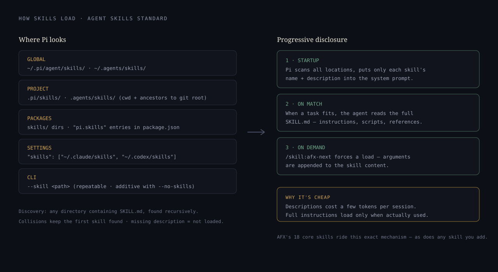
Where Pi looks, and how loading stays cheap — descriptions always in context, full skills on demand. illustration

Settings → Skills — bundled core shown separately from discovered skills, with per-project trust.
07Settings & history
Providers, models, context behaviour, and runtime options live in the extension's own Settings tab — also under afx.* in VS Code settings.
Appearance is configurable too: Meridian ships seven style variants — lyra, luma, maia, nova, vega, mira, sera. Anonymous telemetry has a clear opt-out, and key fields are masked from capture.
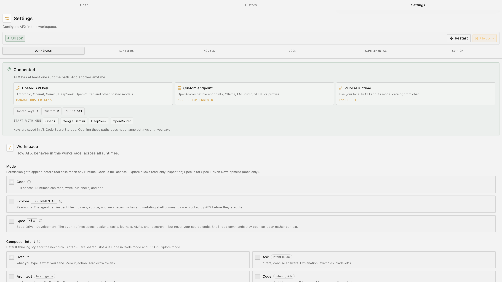

08The AFX CLI
AFX skills follow the open agentskills.io standard, so Claude Code, Codex, and GitHub Copilot run the workflow natively — no VS Code, no separate runtime. The CLI is the installer:
curl -sL https://raw.githubusercontent.com/AgenticFlowX/afx/main/afx-cli | bash -s -- .- Run the installer from your project directory — it prompts for which agents you use.
- It sets up
.claude/skills/and/or.agents/skills/,.afx.yaml,docs/specs/,docs/adr/, and your agent context files. - Start working —
/afx-nexttells any agent where the project stands and what to do next.
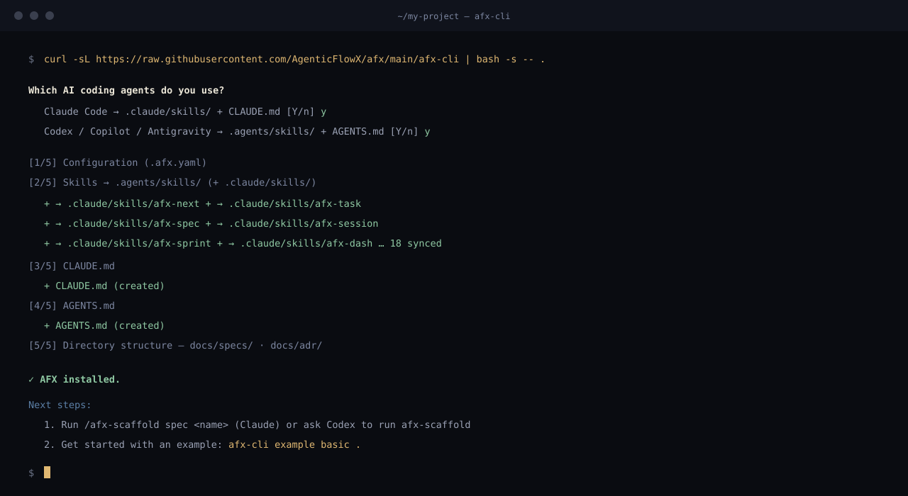
A real install run — the CLI prompts for your agents, syncs the 18 skills, and writes the context files. illustration
afx-cli example scaffolds a complete sample app — starter, basic, or full — with approved specs, traceable code, ADRs, and journals already in place. CLI source & docs →09Skill packs
The AFX workflow ships as packs of standard skills. Every skill's SKILL.md name maps 1:1 to the slash command you type — install a pack, get its commands.
Install from the Claude Code marketplace
claude plugin marketplace add AgenticFlowX/afx
claude plugin install afx-agenticflowx # the 18-skill core
claude plugin install afx-dev # role packs, same patternEach pack is a Claude Code plugin. Skills register immediately — the core pack costs ~1k always-on tokens; full instructions load only when a command runs (progressive disclosure).
Or with afx-cli (any agent)
./afx-cli --pack qa --pack security . # add role packs
./afx-cli --pack-list . # list installed packs and skills
./afx-cli --update --packs . # update all installed packs
./afx-cli --add-skill AgenticFlowX/afx:skills/dev/afx-tdd . # one skill, no packPack → command reference
| Pack | Skills | Slash commands |
|---|---|---|
| agenticflowx core · 18 | The full SDD workflow | /afx-next /afx-task /afx-spec /afx-design /afx-sprint /afx-dash /afx-check /afx-session /afx-context /afx-adr /afx-research /afx-scaffold /afx-report /afx-dev /afx-discover /afx-release /afx-hello /afx-help |
| dev 5 | Engineering craft | /afx-tdd /afx-clean-code /afx-architecture-patterns /afx-git-workflow /afx-systematic-debugging |
| qa 2 | Test strategy | /afx-qa-methodology /afx-spec-test-planning |
| security 2 | Reviews & audits | /afx-owasp-top-10 /afx-security-audit |
| architect 1 | Evidence-based research | /afx-deep-research |
| product-owner 1 | Product decisions | /afx-product-owner |
| starter 1 | Install verification | /afx-hello |
Arguments ride along as text: /afx-task pick, /afx-sprint code, /afx-session note "decision…" — the skill reads everything after its name.
—FAQ
Do I have to use the spec-driven workflow?
No. Most coding stays in chat. Reach for the workflow when a piece of work needs traceability between intent, design, tasks, and code.
Where does my data live?
In your repo. Specs, tasks, notes, journals, and boards are plain markdown in the workspace — no external database, nothing hosted.
Already using pi.dev?
AFX detects your installed Pi CLI and reuses its config and sign-ins — nothing to reconfigure. Otherwise the bundled Pi SDK runs out of the box.
Something else?
Open an issue on GitHub or ask in r/agenticflowx.